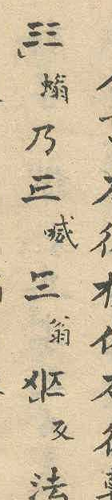
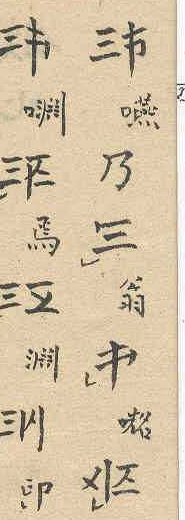

E34
| Claim | Marked Cán and unmarked Cán both appear standalone, with the same reading, also with tone marks; only the unmarked Cán combines, never the marked Cán |
|---|---|
| Proposal sections | 4.1, 5.3 |
| Source | Source 1, Source 1, Source 1 |
| Page | 5 |
| Location | P. 5, example column: the standalone unmarked Cán of đông with the eight tone marks. Marked Cán outside the listing: p. 6, second column from the left, 4th character, and p. 7, first column from the right, 3rd character |
| Status | located |



Transcription
See E15.
Notes
Stated by the proposer from the whole text; the listing of the Cán (E18) shows the marked form, the tone examples (E15) the unmarked form standing alone.
Findings
- Outside the listing of the 22 Cán (p. 2, E18) the marked Cán occurs only twice, as a separate character with a reading, not as an abstract entry of a list (stated by the proposer): p. 6, second column from the left, 4th character (no tone mark), and p. 7, first column from the right, 3rd character (with a tone mark, the semicircle at the lower left). Both are the Cán of ông, annotated 翁 in small characters. The top stroke ends in a short downward stroke at the left, the marking stroke. The images show columns 7 of p. 6 and 1 of p. 7 (Source 1).
- The unmarked Cán is shown standing alone for đông with the eight tones (p. 5, E15; also p. 6, E04) and in the combined characters of the examples for ONG (E07, E39). There is no listing of the unmarked forms. That all 22 Cán occur as unmarked Cán in combinations follows from the counts in the section 音数 (p. 8, E36): 880 = 110 × 8 pairs of the same base and 2,310 × 8 pairs of different bases; this is an inference, not a statement of the source.
- The source calls the form without the marking stroke Cán, like the marked Cán: 幹体 in the heading of the section on the Hợp Thư (E07), 單幹書 and 幹体 in the count section (E36). The proposal calls it the unmarked Cán to tell it from the marked Cán, whose forms have no special name either.
- The first place lies in the section on the Hợp Thư (E07), the second in the passage without heading on p. 7 (E39) before the section on the Tham Thư (E10).
- The marked Cán does not combine in either place.
- Proposer's reading: in both places the marked Cán is written in a formula as the name of the base, and stands, without marking stroke, as the unmarked Cán in the combined character explained by the formula (E07, E39).
Open
- Function of the two occurrences in the passage; transcription of the surrounding text.
- Proposer's hypothesis, not yet researched: the marking could identify the head word, which would explain why the listing of the 22 Cán shows the marked form. Not used in the proposal.